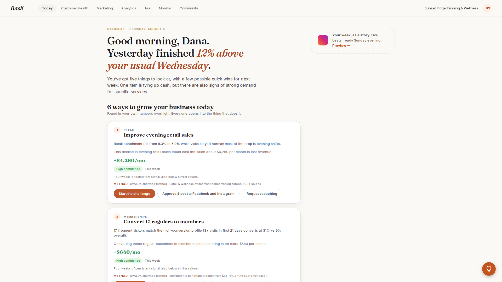
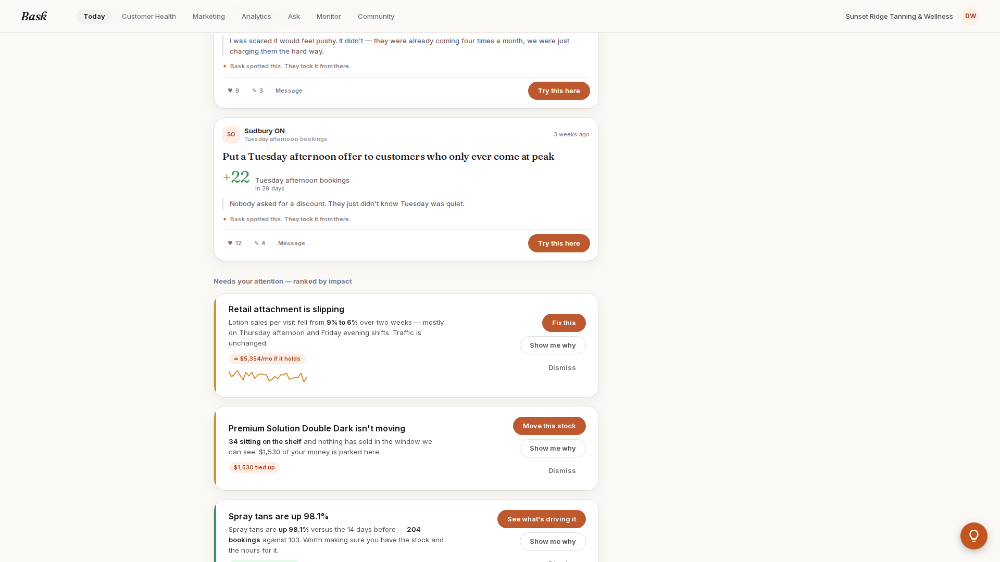
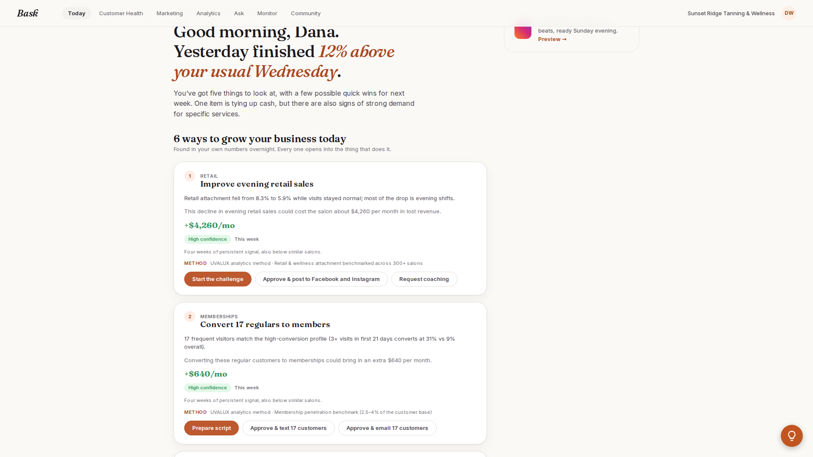
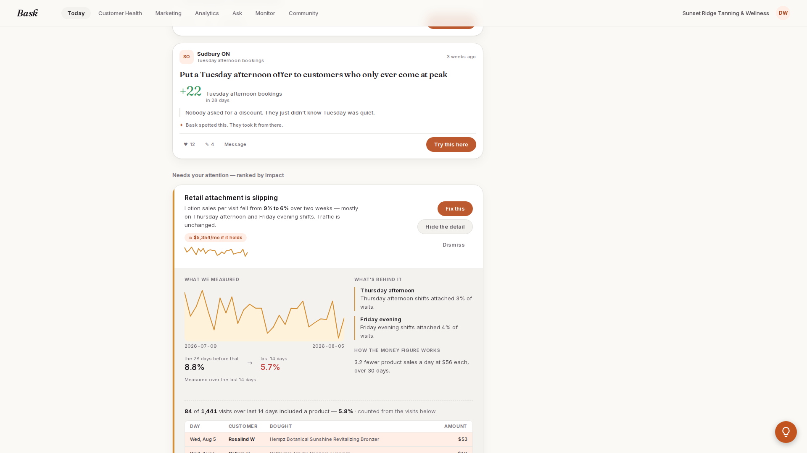
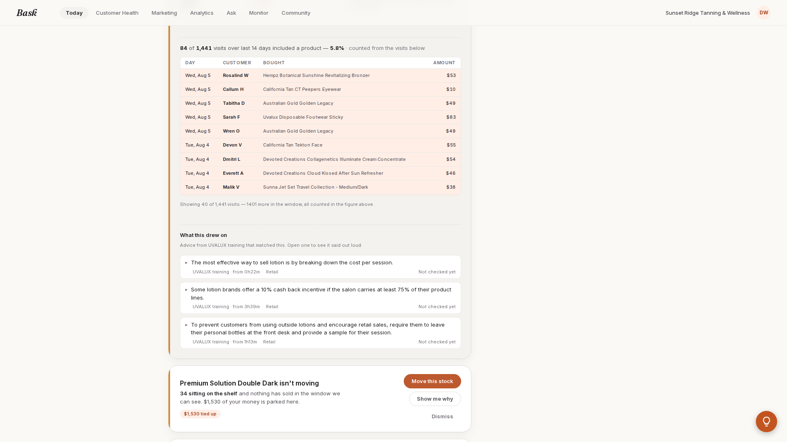
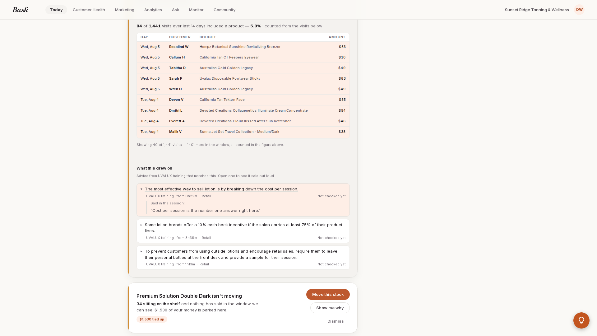
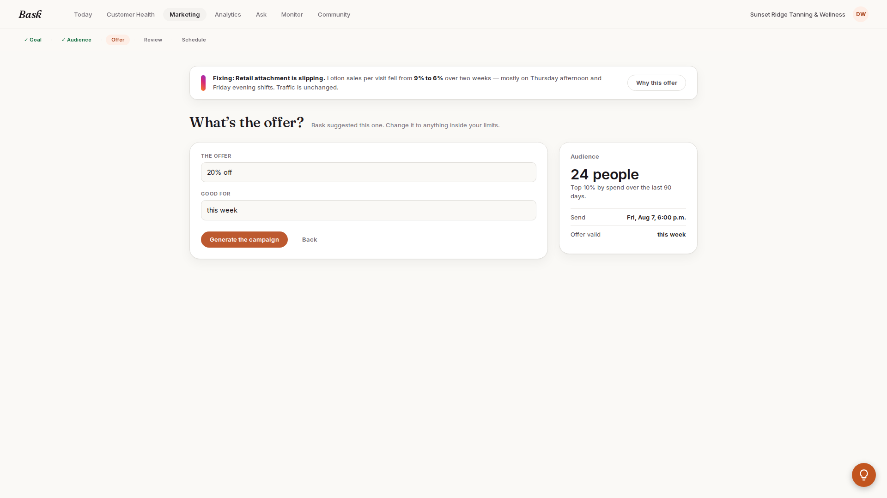
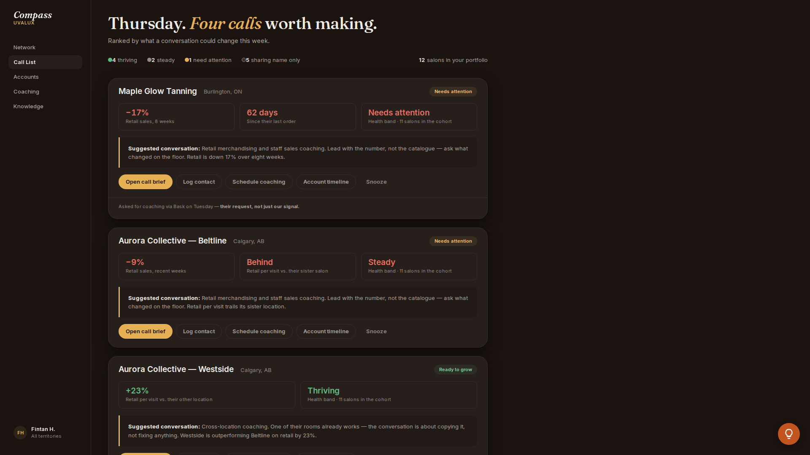
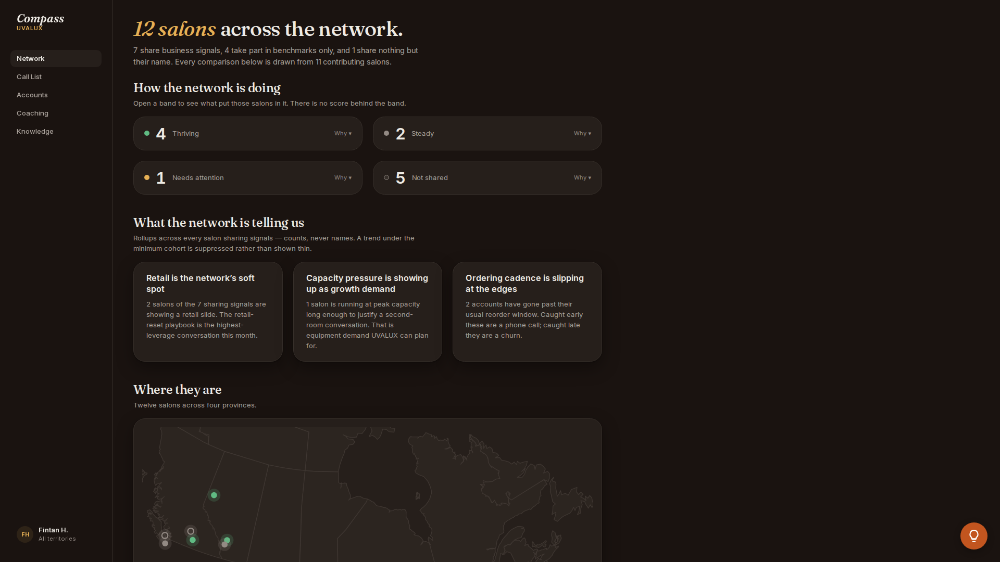
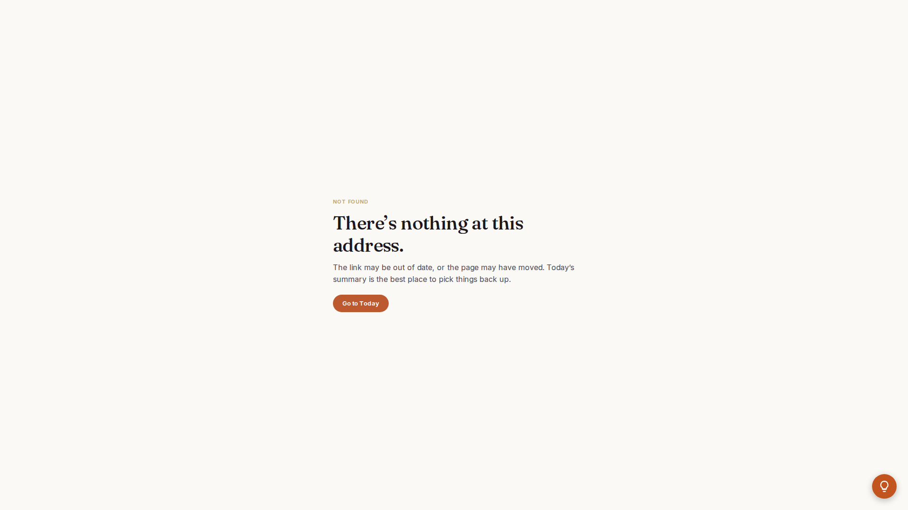

Every beat below was walked live on the deployed build. Screenshots are 1920×1080, unretouched.
Target https://bask-psi.vercel.app · Captured 3 Sep 2026, 03:46 ET ·
Viewport 1920×1080 · Chromium headless, cold cache per beat
Nothing was generated, approved, scheduled or sent. No write action was taken on any surface.
Read this before you walk on
Beat 6 — /compass/calls does not exist. It returns HTTP 404.
The Call List is served from /compass itself — the Compass index is the call list
(“Thursday. Four calls worth making.”). The left-nav item labelled Call List points at
/compass?role=uvalux_rep.
On the night: never type /compass/calls. Go to /compass, or click Call List in the nav.
Typing the old path puts a “NOT FOUND” page on the big screen.
The 8.3% → 5.9% / $4,260 figures are not on the card with “Show me why”.
The Today page carries two separate card systems, and the retail story appears in both with different numbers:
• “6 ways to grow your business today” → card 1, Improve evening retail sales:
8.3% → 5.9%, +$4,260/mo. This card has
no “Show me why” and no “Fix this” — its buttons are Start the challenge / Approve & post / Request coaching.
• “Needs your attention — ranked by impact” → card 1, Retail attachment is slipping:
9% → 6%, ≈ $5,354/mo if it holds.
This is the card that drives beats 3, 4 and 5.
• Inside that card’s evidence view the same metric is stated a third way:
8.8% → 5.7% (28-day window → 14-day window), and the rows footer reads 5.8%.
On the night: if you say “8.3 to 5.9” out loud and then open “Show me why”, the screen will say
9 to 6, then 8.8 to 5.7. Pick one card and quote its own numbers.
Load times — ranked. Anything over 2s is a hole you have to talk through.
Beat
Surface
Measured
Relative
Verdict
4
“What this drew on” — coaching citations, one opened
2,351 ms
Over 2s — talk
3
“Show me why” — evidence chart + visit rows
1,864 ms
Close to 2s
5
“Fix this” → Studio, pre-filled
1,538 ms
Fine
1
Today — the Daybreak letter
1,521 ms
Fine
6a
Compass — Call List (/compass)
1,289 ms
Fine
6b
Compass — Network (/compass/network)
854 ms
Fastest
2
Retail card in the attention queue (scroll only — same page as beat 1)
64 ms
Instant
6c
/compass/calls(not ranked — never reaches a usable surface)
860 ms
404 — do not open
Beats 1, 5, 6a, 6b, 6c are measured from navigation start to the surface being visually ready (key element visible + network idle).
Beats 2, 3, 4 happen inside an already-loaded page, so they are measured from the click to the content being on screen.
Beat by beat
1
Today — the Daybreak letter
GET / → HTTP 200 · the cold open, before you explain anything
1,521ms
to ready

On screen, verbatim
DAYBREAK · THURSDAY, AUGUST 6
“Good morning, Dana. Yesterday finished 12% above your usual Wednesday.”
“You’ve got five things to look at, with a few possible quick wins for next week. One item is tying up cash, but there are also signs of strong demand for specific services.”
“6 ways to grow your business today”
“Found in your own numbers overnight. Every one opens into the thing that does it.”
NoteThe headline matches the pitch script exactly — 12% above your usual Wednesday. The letter says “five things” while the section beneath it says “6 ways”; if Nick counts, that is the mismatch he will find.
2
The retail card in the attention queue
Scroll to “Needs your attention — ranked by impact” · this is the card the rest of Act 1 runs on
64ms
scroll only

On screen, verbatim
Needs your attention — ranked by impact
Retail attachment is slipping
“Lotion sales per visit fell from 9% to 6% over two weeks — mostly on Thursday afternoon and Friday evening shifts. Traffic is unchanged.”
≈ $5,354/mo if it holds
Controls: Fix this · Show me why · Dismiss
Watch outThese are 9% → 6% and $5,354 — not 8.3→5.9 / $4,260. Those live on a different card, shown below.
2b
Where 8.3% → 5.9% / $4,260 actually lives
“6 ways to grow your business today”, card 1 · a different section, higher up the page
—
context

On screen, verbatim
1 · RETAIL
Improve evening retail sales
“Retail attachment fell from 8.3% to 5.9% while visits stayed normal; most of the drop is evening shifts.”
“This decline in evening retail sales could cost the salon about $4,260 per month in lost revenue.”
+$4,260/mo · High confidence · This week
“Four weeks of persistent signal, also below similar salons.”
Buttons: Start the challenge · Approve & post to Facebook and Instagram · Request coaching
Do not demo from hereThis card has no “Show me why” and no “Fix this”. If you open the retail story from this card you have nowhere to go — the drill-down and the Studio hand-off only exist on the attention-queue card in beat 2.
3
“Show me why” — the evidence, inline
Expands in place and pushes the queue down · button flips to “Hide the detail”
1,864ms
click → chart + rows

On screen, verbatim
WHAT WE MEASURED
the 28 days before that 8.8% → last 14 days 5.7%
2026-07-09 — 2026-08-05
“Measured over the last 14 days.”
WHAT’S BEHIND IT
Thursday afternoon — “Thursday afternoon shifts attached 3% of visits.”
Friday evening — “Friday evening shifts attached 4% of visits.”
HOW THE MONEY FIGURE WORKS
“3.2 fewer product sales a day at $56 each, over 30 days.”
Talk trackNearly two seconds of blank expansion. Say the line while it opens: “it shows its working — the window it measured, the shifts it blames, and the arithmetic behind the dollar figure.”
3b
… then the visit rows
Row-level receipts, directly under the chart — scroll, no extra click
—
same expansion

On screen, verbatim
84 of 1,441 visits over last 14 days included a product — 5.8% · counted from the visits below
Columns: DAY · CUSTOMER · BOUGHT · AMOUNT
Wed, Aug 5 · Rosalind W · Hempz Botanical Sunshine Revitalizing Bronzer · $53
Wed, Aug 5 · Callum H · California Tan CT Peepers Eyewear · $10
Wed, Aug 5 · Tabitha D · Australian Gold Golden Legacy · $49
Wed, Aug 5 · Sarah F · Uvalux Disposable Footwear Sticky · $83
“Showing 40 of 1,441 visits — 1401 more in the window, all counted in the figure above.”
NoteThe footer reads 5.8% here, against 5.7% in the chart above it and 6% on the card. Same metric, three roundings, all visible at once if he scrolls.
4
“What this drew on” — the coaching citations
Loads asynchronously after “Show me why”, at the very bottom of the expansion. Three citations; one opened here.
2,351ms
slowest beat

On screen, verbatim
What this drew on
“Advice from UVALUX training that matched this. Open one to see it said out loud.”
Opened: “The most effective way to sell lotion is by breaking down the cost per session.” UVALUX training · from 0h22m · Retail · Not checked yet
Said in the session: “Cost per session is the number one answer right here.”
“Some lotion brands offer a 10% cash back incentive if the salon carries at least 75% of their product lines.” UVALUX training · from 3h39m · Retail · Not checked yet
“To prevent customers from using outside lotions and encourage retail sales, require them to leave their personal bottles at the front desk and provide a sample for their session.” UVALUX training · from 1h13m · Retail · Not checked yet
Talk track — you must fill thisThis is the longest wait in the demo and the block appears below the fold, roughly 800ms after the evidence itself. Expand, scroll down, and keep talking: “and it tells you where the advice came from — a timestamp in UVALUX’s own training, not a guess.” Then open a citation. Every citation is tagged Not checked yet — if Nick asks, that is the review state, not an error.
5
“Fix this” → Studio, arriving pre-filled
/marketing?insight=fcbac7c8-35e7-4ad2-9d75-300041bfc26f · captured pre-generate — nothing was generated, approved, scheduled or sent
1,538ms
to ready

On screen, verbatim
Step rail: ✓ Goal · ✓ Audience · Offer · Review · Schedule (lands on Offer, first two already satisfied)
“Fixing: Retail attachment is slipping. Lotion sales per visit fell from 9% to 6% over two weeks — mostly on Thursday afternoon and Friday evening shifts. Traffic is unchanged.”
“What’s the offer?” — “Bask suggested this one. Change it to anything inside your limits.”
THE OFFER: 20% off · GOOD FOR: this week
Audience — 24 people. “Top 10% by spend over the last 90 days.”
Send Fri, Aug 7, 6:00 p.m. · Offer valid this week
Buttons present but not pressed: Generate the campaign · Why this offer · Back
Talk track“I never started from a blank page.” The goal and the audience are already ticked; the offer is written and editable. This is the beat that proves the hand-off, so let it sit before you touch Generate.
6a
Compass — the Call List
GET /compass → HTTP 200 · role switches, theme flips dark
1,289ms
to ready

On screen, verbatim
“Thursday. Four calls worth making.”
“Ranked by what a conversation could change this week.”
4 thriving · 2 steady · 1 need attention · 5 sharing name only · 12 salons in your portfolio
Maple Glow Tanning, Burlington, ON — Needs attention −17% Retail sales, 8 weeks · 62 days Since their last order · Health band · 11 salons in the cohort
“Suggested conversation: Retail merchandising and staff sales coaching. Lead with the number, not the catalogue — ask what changed on the floor. Retail is down 17% over eight weeks.”
“Asked for coaching via Bask on Tuesday — their request, not just our signal.”
Aurora Collective — Beltline, Calgary, AB — −9%, Behind, Steady
Aurora Collective — Westside, Calgary, AB — Ready to grow, +23%, Thriving
Left nav: Network · Call List · Accounts · Coaching · Knowledge · Fintan H., All territories
NavigationThis page is the call list. Reach it by clicking Call List in the nav or typing /compass. There is no /compass/calls.
6b
Compass — Network
GET /compass/network → HTTP 200 · fastest surface in the demo
854ms
to ready

On screen, verbatim
“12 salons across the network.”
“7 share business signals, 4 take part in benchmarks only, and 1 share nothing but their name. Every comparison below is drawn from 11 contributing salons.”
“How the network is doing” — “Open a band to see what put those salons in it. There is no score behind the band.”
“Retail is the network’s soft spot” — “2 salons of the 7 sharing signals are showing a retail slide. The retail-reset playbook is the highest-leverage conversation this month.”
“Capacity pressure is showing up as growth demand” — “1 salon is running at peak capacity long enough to justify a second-room conversation.”
“Ordering cadence is slipping at the edges” — “2 accounts have gone past their usual reorder window.”
Where they are — “Twelve salons across four provinces.” AB 3 · BC 4 · ON 3 · QC 2
Adoption — 10 active
!
/compass/calls — MISSING, 404
GET /compass/calls → HTTP 404 · the route does not exist in the build and does not exist in the repo
404
do not open

On screen, verbatim
NOT FOUND
“There’s nothing at this address.”
“The link may be out of date, or the page may have moved. Today’s summary is the best place to pick things back up.”
Button: Go to Today
SubstituteUse /compass (beat 6a) — it is the call list. Existing Compass routes are exactly:
/compass, /compass/network, /compass/accounts, /compass/coaching, /compass/knowledge.
Note the 404 page’s recovery button sends you to Bask’s Today, dropping you out of the dark Compass theme mid-demo.